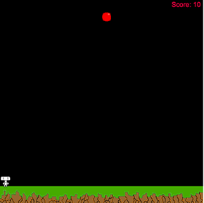

Time to sit back and enjoy a nice up coffee...and some sweet games.

Catch The Fruit! A simply and addictive browser that tests too see how much fruit can you catch? Are you man enough to make sure that the fruit doesn't hit the ground? Test your skills and play the game right now!